L'Immagine
L'acquerello
dei suoni.
Il colore della frequenza
Per Coulouban, il confine tra le arti non esiste. Quello che sente nel segreto del suo spirito è un'orchestra immensa, una simmetria matematica che cerca di catturare.
Se non la suona, la dipinge. Pittore dell'anima, trasferisce le sue visioni su carta acquerellata. Le sue tele sono le compagne delle sue melodie: sono gli angeli del suo cielo interiore e i volti dei suoi silenzi.
Le Icone Cosmiche
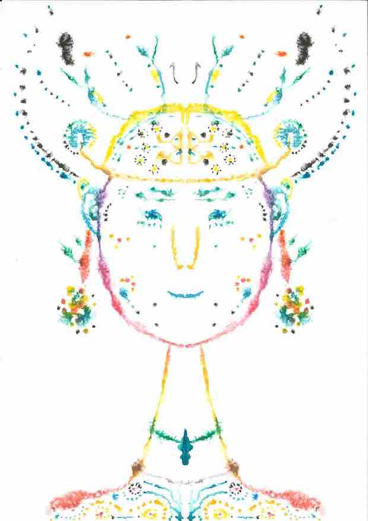
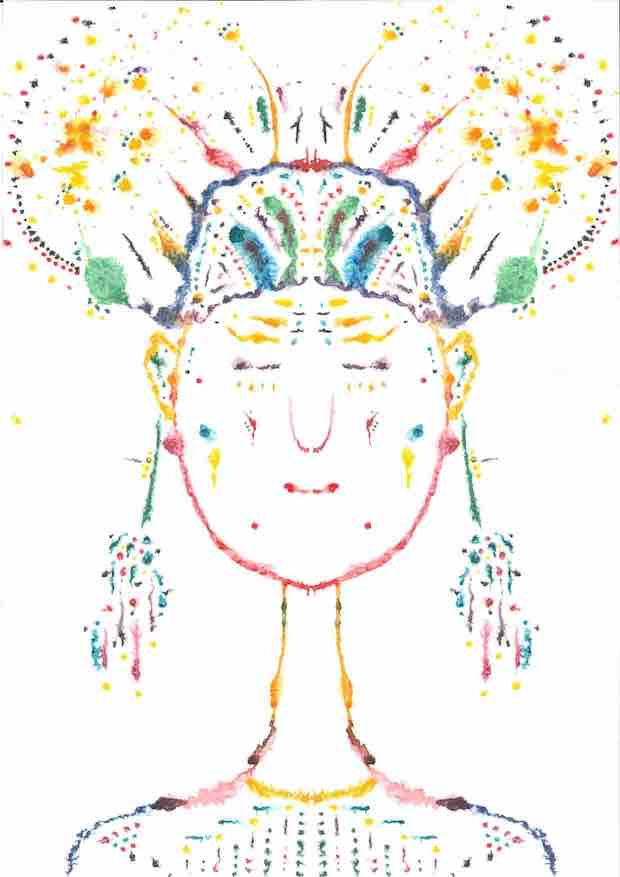
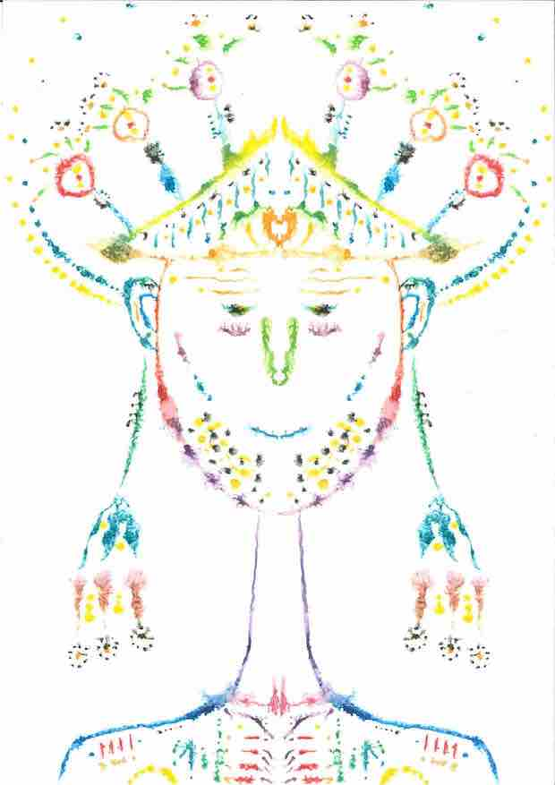
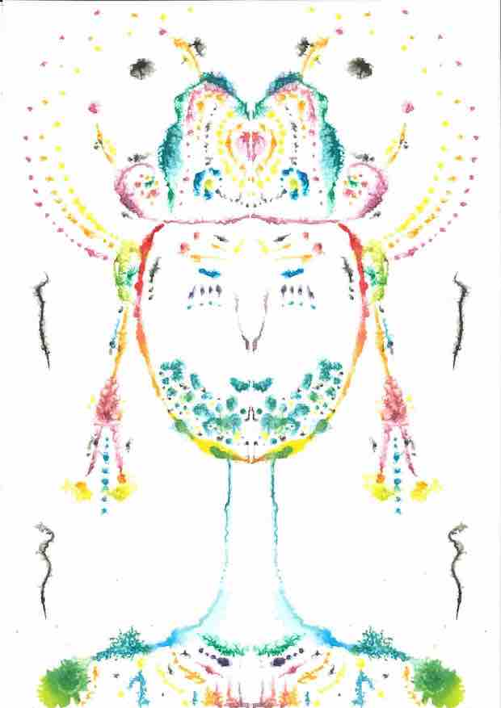
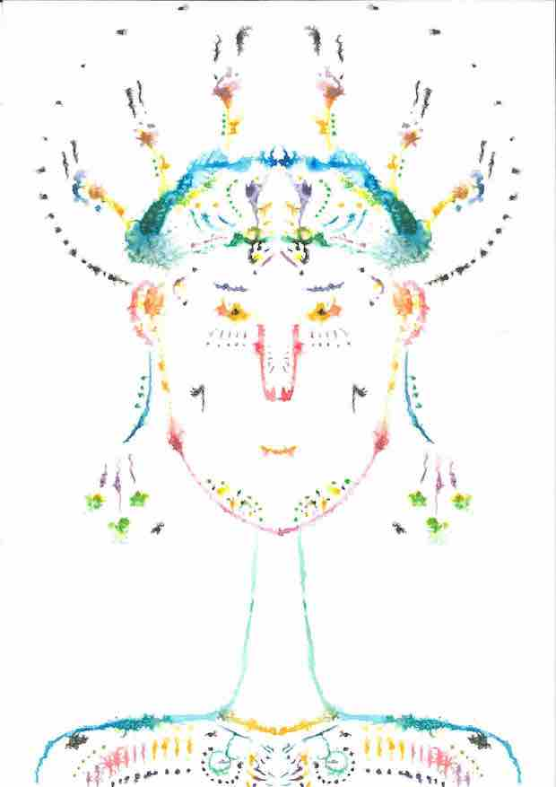
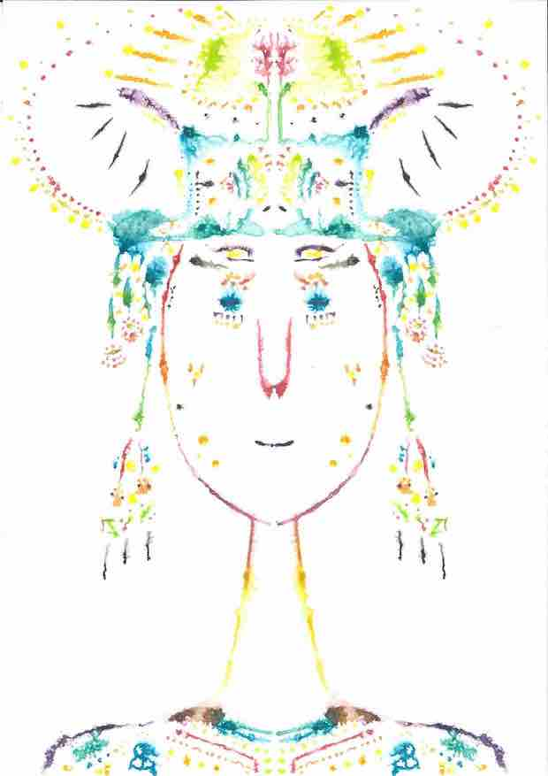
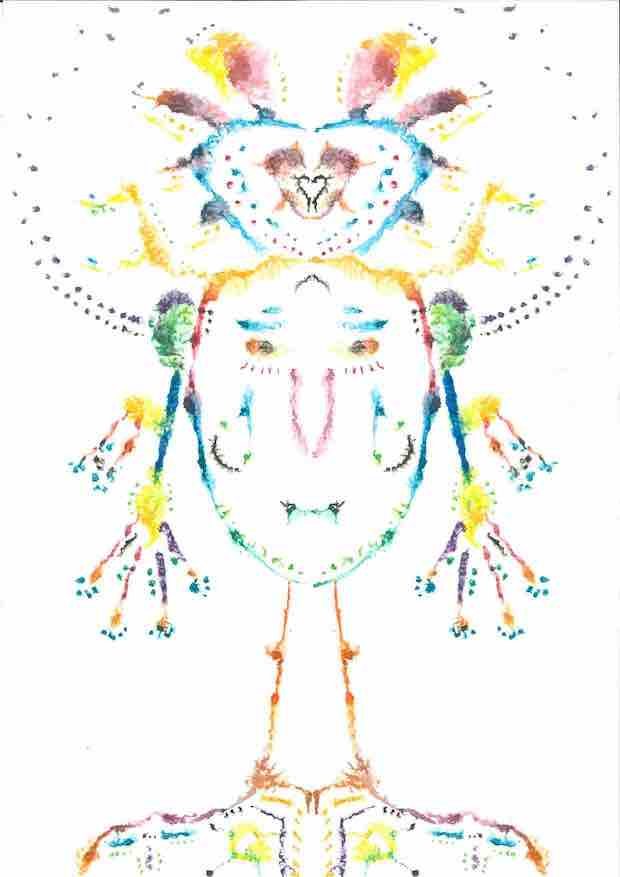
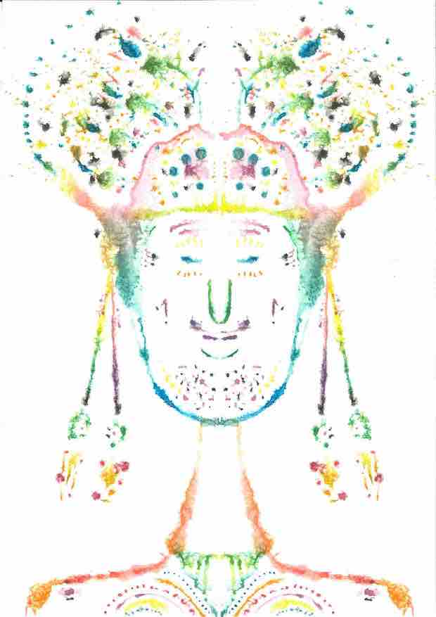
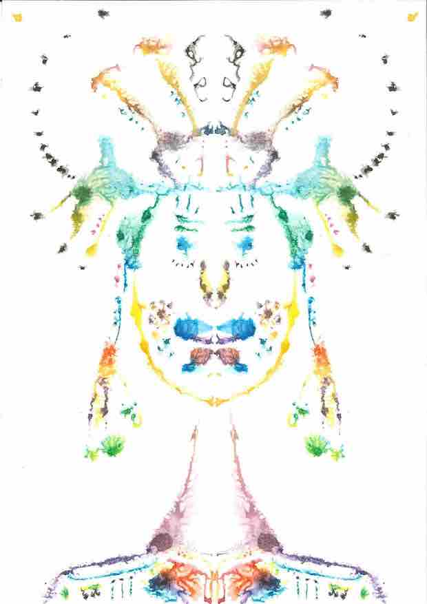
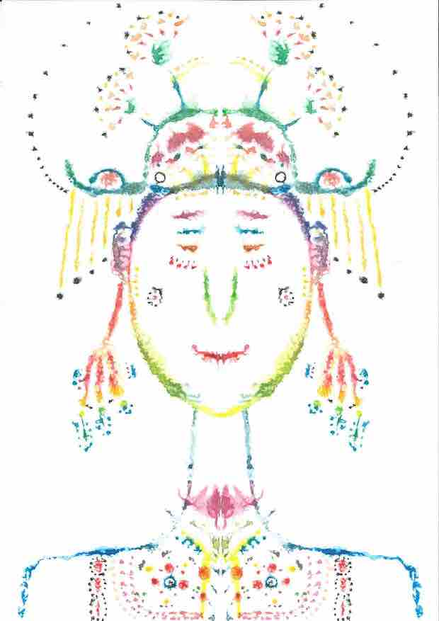
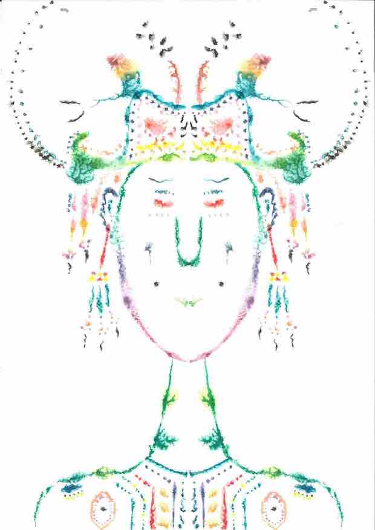
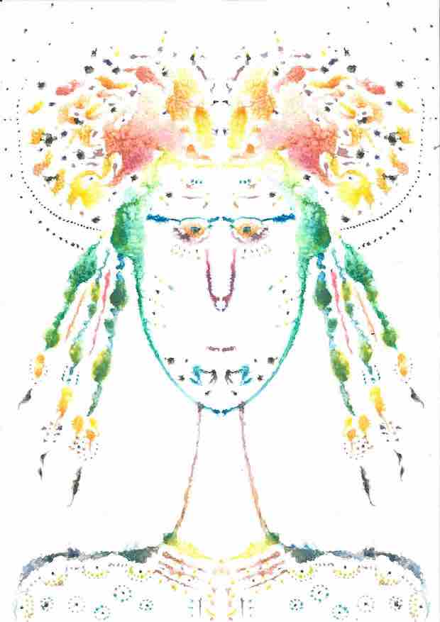
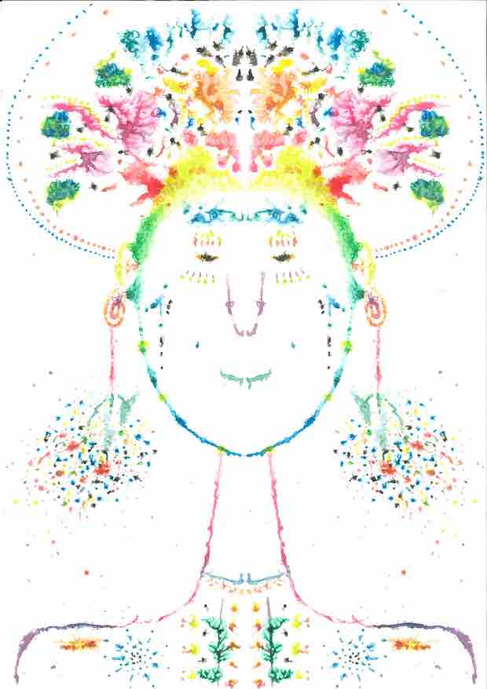
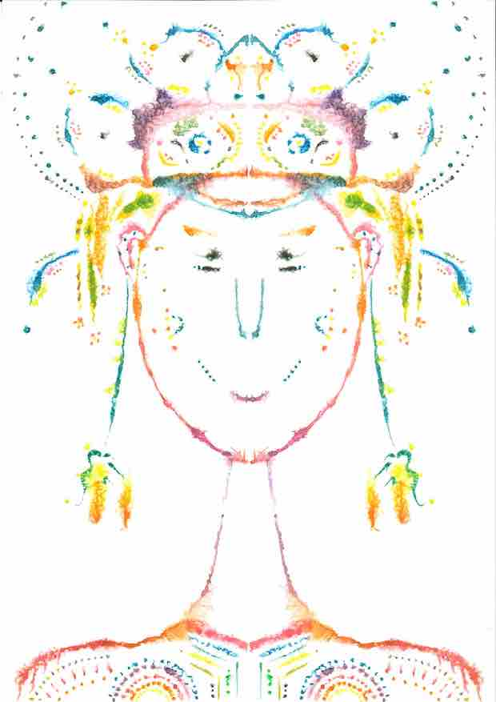
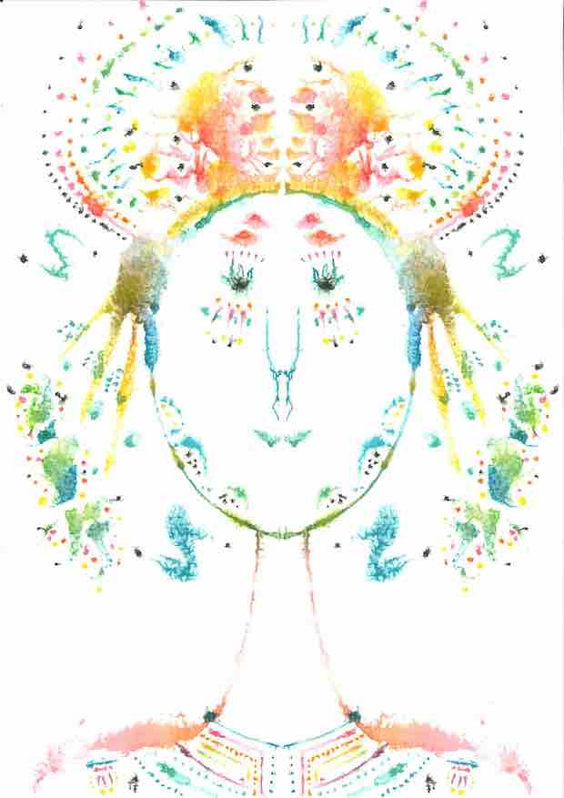
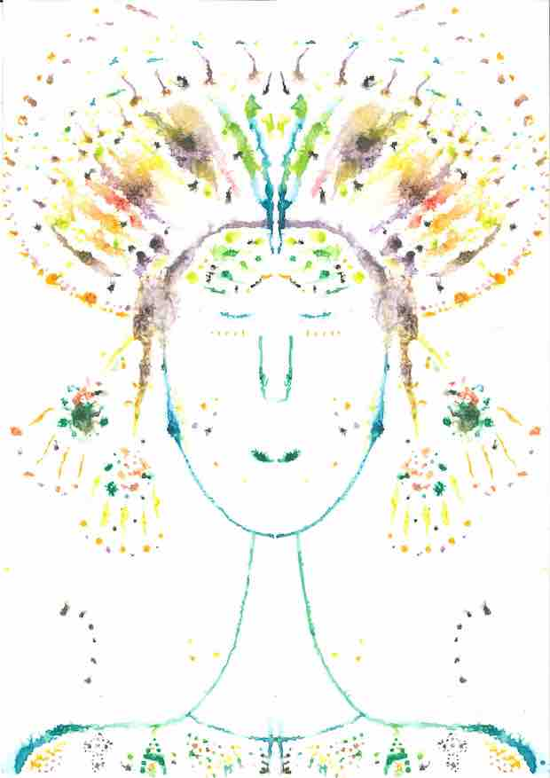
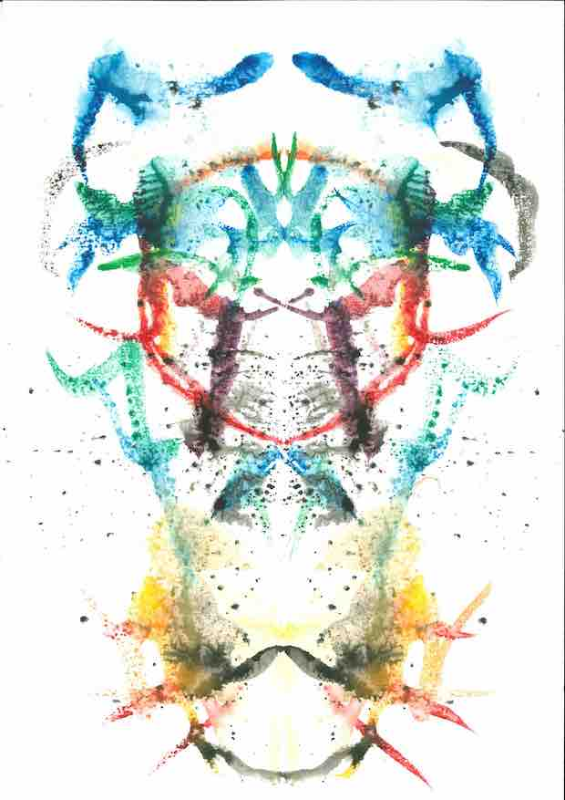
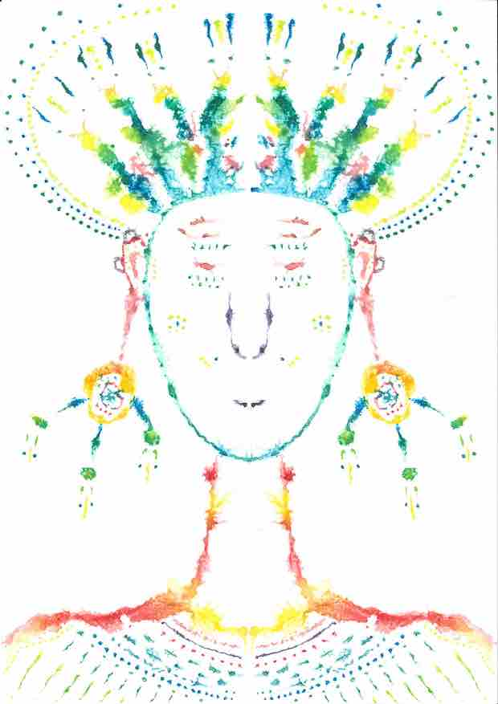
Fai clic su un dipinto per ingrandirlo
Ora che le parole sono scritte e i dipinti dipinti, è tempo di fare cantare la luce.
Vivere l'Esperienza Musicale